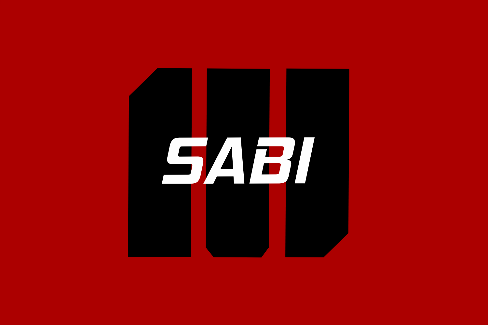

Tentang Kami
Mahasiswa Sabi merupakan platform independen yang dibangun untuk membantu para mahasiswa menemukan materi kuliah dan contoh tugas gratis dengan mengumpulkan file dari mahasiswa angkatan sebelumnya. Selama dua tahun berjalan di usia yang cukup muda ini kami sudah bekerja sama dengan kawan-kawan dari beberapa jurusan secara independen diantara lain.
- Agribisnis
- Kehutanan
- Peternakan
- Agroteknologi
- Ilmu Kelautan
- Ilmu Tanah
- Manajemen
Kami juga menyediakan program kelas berbayar untuk memberikan insight yang lebih mendalam terkait tugas-tugas yang kurang dipahami oleh mahasiswa dengan program unggulan
- Ngide Dan Ngedit Website BisnisTugas Sistem Informasi Agribisnis
- Konsultasi Laporan KeuanganTugas Akuntansi Agribisnis
Kami menyambut mahasiswa-mahasiswa yang secara sukarela ingin membantu adik-adik tingkatnya dengan memberikan materi dan sisa tugas kuliahnya, untuk membantu memperkaya wawasan mereka. Kami percaya bahwa berbagi ilmu itu tidak membuat kita rugi melainkan membuat kita semakin paham, dengan berbagi ilmu kita membuka kesempatan untuk suatu inovasi dan kreativitas itu berkembang lebih cepat.
Selain itu kami menyediakan program untuk mahasiswa yang ingin membantu namun juga perlu jajan tambahan lewat Paid Quest (Pencarian Berbayar) dan akan dibayar sebagai penyedia informasi. Pantau informasi terkait Paid Quest yang terdapat pada papan pengumuman di bawah ini.
Kelas Berbayar
- Ngide Dan Ngedit Website BisnisTugas Sistem Informasi Agribisnis
- Konsultasi Laporan KeuanganTugas Akuntansi Agribisnis
- Kelas Excel DasarBelajar Statistika Lebih Mudah Dengan Komputer
- Kelas DokumenBelajar Bikin Makalah Lebih Mudah
Sorotan Laman Pengumuman dan Iklan
- mengumpulkan materi kuliah secara sukarela
- cari jajan tambahan lewat nyari materi kuliah
- Pasang Iklan Anda Disini